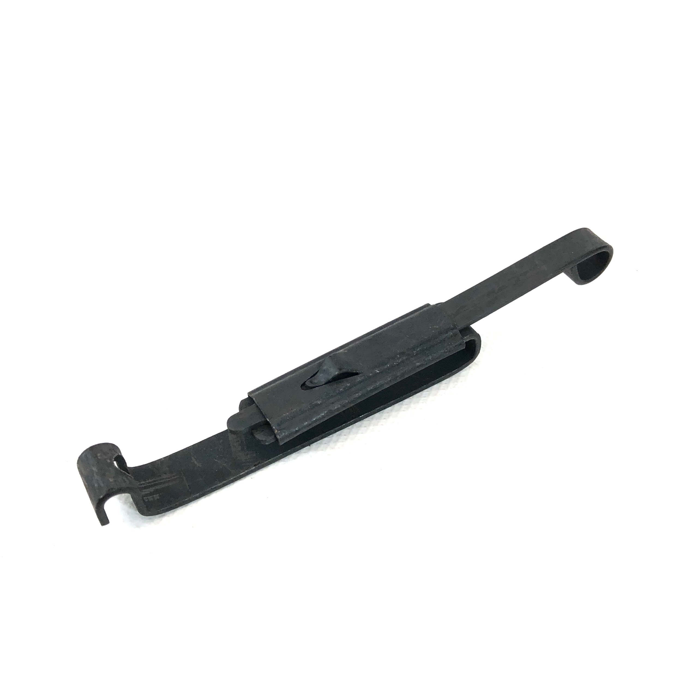
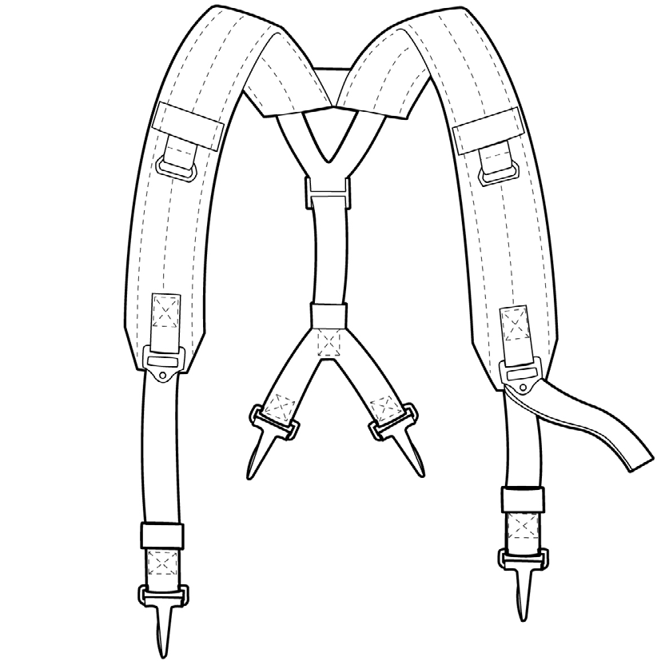

This system is modular for all of you milsimmers out there. Any Alice pouch will fit securely on this system thanks to the slide keepers or "alice clips", which are actually a carry over from the older M1956 canvas and M1967 nylon rigs from the vietnam era. Due to this fact, any pouch from the two previous systems will work with Alice seamlessly, in fact the butt pack was a carry over from the previous, however is not pictured here as the 1990's training packs are easier to find, cheaper, and are made of nylon not canvas. Alice is a nylon, while the other two were either Nylon prototypes or canvas material which while durable traps water when wet and gets heavy causing fatigue, Alice doesn't have this problem, unless you're carrying to much. Another item that will work with alice is the LBV-88 (Load Bearing Vest 88) which was designed to improve and use Alice in the 1990's and replace the older Y straps. While you could use this vest by itself, it works and looks better with an Alice belt. The LBV 88 holds six M4 pattern magazines and two grenade pouches (if you can afford Pyrotechnic grenades as the Co2 grenades will not fit) so if you set it up right, you could double your ammunition count, which for milsim events, longer running skirmish games, or just a game that gets extremely hot and contested the more magazines the better, especially at a field allowing full auto fire.
Alice Clip aka "slide keepers"
Slide Keeper in the open position
To affix any alice pouch to the LC-2 belt (or older belts like the M1956 or M1967) follow these instructions
- slide one Alice Clip into each slot on the back of the pouch with the open end facing away from the pouch.
- slide the clips in the open position until the bottom of the clip can be seen at the bottom of the belt
- ensure pouch is in the desired position then push the top part of the clip until it is in the closed position
- check to make sure all pouches are in their proper position, if not repeat from the top. some clips will be bent so they will slide around unless closed
Once this is done you must attach your y straps by

- positioning the front of the Y straps (the open or fork portion) to the eyelets on the magazine pouches
- attach front portion, the two long sides with the padding facing inward
- attach the rear of the Y straps (the short end with two hooks close together to the belt or buttpack eyelets
LBV-88E Vest

If you decide to use the LBV-88 vest, here are some things you will want to know. Each vest comes with four magazine pouches with two on each side. the top pouch can hold two STANAG magazines while the bottom pouch only holds one, leading to a total capacity of six magazines plus the one in your weapon, which allows the same 210 round loadout as the Alice but more compacted, but if you keep the 3 mag pouches you can carry even more with 90 rounds per pouch. it also has two grenade/handcuff pouches. For AEG guns, you would roughly get about 840 shots give or take, but for gas blowback its about the same as real steel in terms of capacity. To use this vest, open the belt loops and place the belt inside them, then close the loops. Once you have done this, adjust the vest and belt to where its comfortable but not too tight that its constricting. For simplicitys sake, this can be considered its own piece of Alice equipment. It is only availible in Woodland M81, barring prototypes or aftermarket, however it is advised to only use USGI only as most aftermarket items are poorly made! To attach the LBV-88 to the belt
- open all loops at the bottom and place belt inside loops
- close loops with velcro and snaps
- adjust loops to desired spacings
- adjust vest height and width